Flots : exercices
- François Brucker
Deux exercices de modélisation par les flots. Ces problèmes sont classiques et sont la bases de nombreuses applications.
Problème du transport de marchandise
Un problème de transport est une variation sur les flots.
On considère que l'on a un graphe orienté $G = (V, E)$ et que l'on a dans ce graphe deux sous ensembles :
- un ensemble $S \subsetneq V$ de sources qui ont une marchandise en excès
- un ensemble $P \subsetneq V$ de puits qui demandent cette marchandise
Les sommets qui ne sont ni dans $S$ ni dans $P$ sont dit sommets intermédiaires.
On a de plus une valuation $v(u)$ pour chaque arc de $G$ qui détermine le coût de transport d'une unité sur cet arc.
Le problème est alors de transporter les ressources des sommets de $S$ aux sommets de $P$ à coût minimum.
Montrer que l'on peut modéliser ce problème comme un problème de flot maximum à coût minimum.
solution
solution
On ajoute au graphe :
- un sommet $s$ et des arcs $sx$ pour $x \in S$ de coût 0 et de capacité l'excédant en $x$
- un sommet $p$ et des arcs $xp$ pour $x \in P$ de coût 0 et de capacité la demande en $x$
On considère que les capacités des autres arcs du graphe sont égales à $+\infty$.
Le problème du transport de marchandise revient à trouver le flot maximum à coût minimum.
Le graphe suivant est un problème de transport :
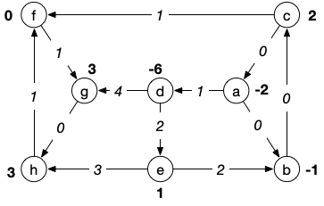
Le coût de transport est sur les arcs et les demandes (nombres négatifs)/excès (nombres positifs) de marchandises sont en gras à côté des nœuds.
Résoudre le problème de transport du graphe précédent.
solution
solution
Le graphe exemple transformé en problème de flot est :
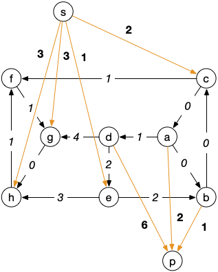
Les capacités sont en gras (les arcs sans capacités sont considérés comme étant de capacité infini) et les coûts sont sur les arcs (les arcs sans coûts sont considérés comme étant de coût nul).
On peut redessiner le réseau sous cette forme :
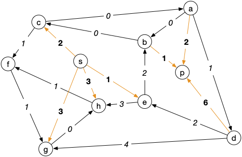
Le flot étant nul au départ, le graphe d'écart pondéré est égal à :
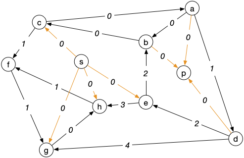
Un chemin de poids min entre $s$ et $p$ pourra alors être : $scap$ de poids 0 et qui permet d'augmenter le flot de 2 :
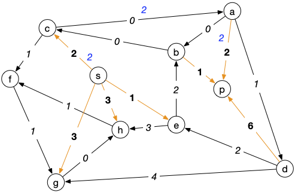
On a de là le graphe d'écart :
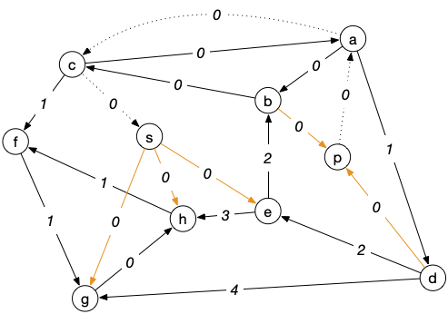
Un chemin de poids min entre $s$ et $p$ pourra alors être : $sebp$ de poids 2 et qui permet d'augmenter le flot de 1 :
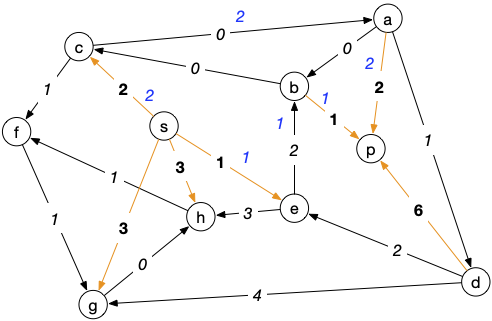
Le flot est maximum, l'algorithme de Ford et Fulkerson nous donnant une coupe min valant 3 :
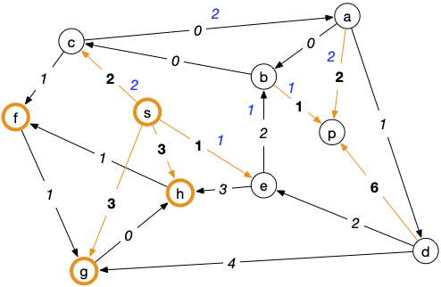
Problème du transport amoureux
Des héros littéraires ont décidé de se marier. On considère pour simplifier qu'ils sont tous hétérosexuels et qu'ils ont préétablis une matrice d'affinité : un cœur dans la case signifie que la ligne et la colonne sont intéressées l'une par l'autre.
| Cléopâtre | Iphigénie | Juliette | Fanny | Chimène | |
|---|---|---|---|---|---|
| Achille | ♥ | ♥ | |||
| César | ♥ | ♥ | |||
| Rodrigue | ♥ | ♥ | |||
| Roméo | ♥ | ♥ | |||
| Marius | ♥ | ♥ |
Pour un graphe simple $G = (V, E)$ un couplage $M$ est un un ensemble d'arêtes deux à deux disjointes (pour tout sommet $x$, il existe au plus 1 arête de $M$ telle que $x$ soit une de ses extrémités).
Montrez que ce problème peut s'écrire comme un problème de couplage maximum dans un graphe
solution
solution
On peut écrire le graphe suivant, en liant les affinités par une arête. Le graphe est bi-parti car les mariages sont ici hétérosexuels :
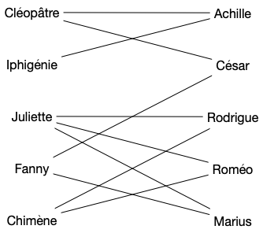
Comme on ne peut marier une personne qu'une seule fois, c'est bien un problème de couplage (l'arête choisie est le mariage).
Un graphe simple $G = (V, E)$ est biparti s'il existe $V_1$ et $V_2$ tels que $V = V_1 \cup V_2$, $V_1 \cap V_2 = \emptyset$ et tel que toute arête de $E$ a une extrémité dans $V_1$ et l'autre dans $V_2$.
Montrer que comme ce graphe est bi-parti, on peut modéliser le problème de couplage comme un problème de flot maximum.
solution
solution
Pour le transformer en problème de flot on peut créer le réseau suivant, avec des capacités de 1 partout :
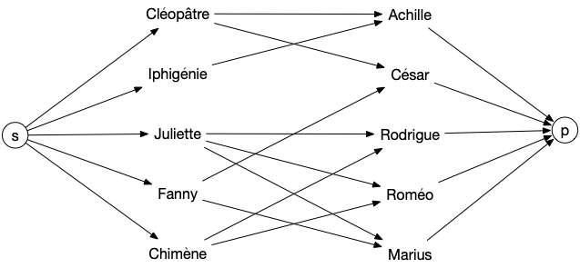
Cela fonctionne car pour chaque chaîne augmentante, on va la saturer par un entier (donc 1) : on est assuré que le flot maximum sera entier, on ne va pas marier à moitié une personne.
Une fois le problème modélisé, résolvez le.
Il existe deux solutions où tout le monde est marié à la fin. Lesquelles ?
solution
solution
En résolvant le problème on trouve :
- Iphigénie - Achille
- Cléopâtre - César
- Juliette - Rodrigue
- Fanny - Marius
- Chimène - Roméo
Il y a aussi la solution classique où vous échangez les maris de Juliette et Chimène.
La modélisation par flot nécessite deux population distinctes à marrier. Dans notre cas, cela suppose que l'on ne peut marier des héroïnes qu'à des héros :
Montrez que si Iphigénie en pince également pour Cléopâtre, la modélisation par flot ne fonctionne plus.
solution
solution
Cela donne le graphe de relation et modélisation en flot associée :
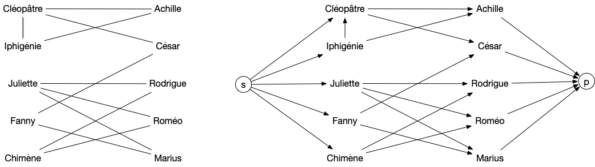
:On pourrait alors arriver à la chaîne augmentante suivante, qui marierait Iphigénie à Cléopâtre et Cléopâtre à César ce nos règles interdisent (un seul marriage par personne).
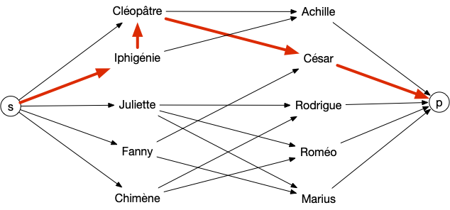
:Le problème ne peut alors plus se résoudre comme un problème de flot et il faut utiliser d'autres algorithmes pour le résoudre (rassurez-vous vas les voir juste apres cette partie).
Si l'on veut rajouter des amants (chaque personne peut avoir un conjoint et/ou un amant), le problème devient NP-difficile.
Ce problème est un exemple pratique du fait que si les capacités sont entières, le flot sera lui aussi entier.
Code
Utilisez les codes du cours pour résoudre informatiquement les deux problèmes précédents.